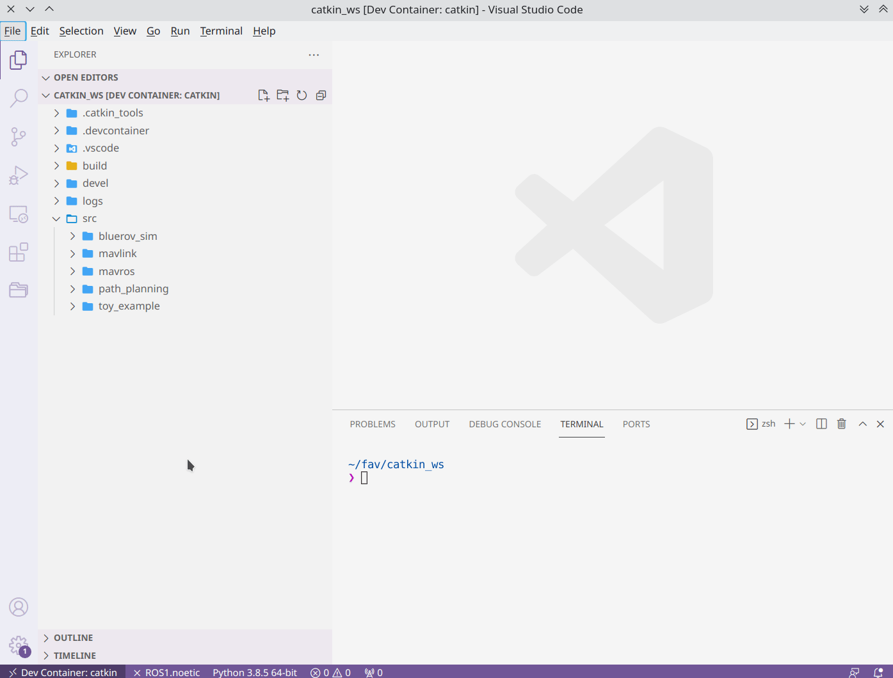
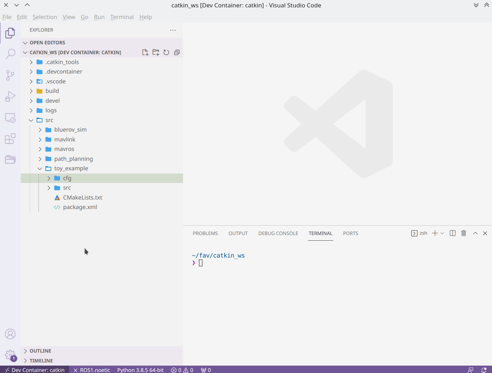

Dynamic Reconfigure
Change parameters on the fly during runtime with the help of dynamic_reconfigure and never ever restart your whole setup to tune your hardcoded parameters 🥳 . You can find the API documentation and another tutorial guide in the ROS wiki.
Prerequisites
a ROS package for which you want to use
dynamic_reconfigure
Attention
In this example this package will be called toy_example. Replace occurences of this package name with your own package name. Do not copy-paste.
Scenario
Imagine we have something like a PID-Controller and we want to change the gains and maybe some other parameters as well while the node is running. Things we would like to configure could be:
PID gains
limits for the integral term (there are many more anti-windup strategies. Use your preferred search engine for some inspiration.)
Activate/Deactivate the integrator so the integrator is not accumulating control errors while the controller is not active.
Config File
Config files define the parameters we use for a dynamic_reconfigure service. In the following sections we will create such a config file and add some parameters.
Create a Config File
Create a directory called
cfgfor your package.cd ~/fav/catkin_ws/src/toy_example && mkdir cfg
Create a config file with a meaningful name.
touch PidControl.cfg
Config File Boilerplate
Replace "toy_example" with the name of your package.
1 #!/usr/bin/env python
2 PACKAGE = "toy_example"
3
4 from dynamic_reconfigure.parameter_generator_catkin import *
5
6 gen = ParameterGenerator()
7
8 # here wee need to add our reconfigure parameters
9
10 exit(gen.generate(PACKAGE, "my_control_node", "PidControl"))
"my_control_node" is the name of a node that could use this dynamic_reconfigure configuration. It is used for docs generation only and can be whatever we like. The last parameter "PidControl" determines the name of the generated Python or C++ code. This will be relevant when we import the generated python file in our node. Config.py will always be appended. So in our case the generated python file name will be PidControlConfig.py
Add Parameters
We can use different parameter types:
int_tdouble_tstr_tbool_t
Even enums are possible but we will leave this out for now. For the PID gains and for the integral limits we use double_t. For activating/deactivating the integrator of the PID control we use bool_t.
1 #!/usr/bin/env python
2 PACKAGE = "toy_example"
3
4 from dynamic_reconfigure.parameter_generator_catkin import *
5
6 gen = ParameterGenerator()
7
8 # here wee need to add our reconfigure parameters
9 gen.add(name="p_gain", paramtype=double_t, level=0, description="Proportional gain", default=1.0, min=None, max=None)
10 gen.add(name="i_gain", paramtype=double_t, level=0, description="Integral gain.", default=0, min=None, max=None)
11 gen.add(name="d_gain", paramtype=double_t, level=0, description="Derivative gain.", default=0, min=None, max=None)
12 gen.add(name="integral_lower_limit", paramtype=double_t, level=0, description="Integral lower limit.", default=-0.2, min=-1.0, max=1.0)
13 gen.add(name="integral_upper_limit", paramtype=double_t, level=0, description="Integral upper limit.", default=0.2, min=-1.0, max=1.0)
14 gen.add(name="integrator_active", paramtype=bool_t, level=0, description="Activate or deactivate the integrator.", default=False)
15
16 exit(gen.generate(PACKAGE, "toy_example", "PidControl"))
The values for min and max are optional. If you do not want to/cannot specify them, set them to None or omit them completely.
Note
The parameter name must be a valid identifier. Do not use spaces or leading numbers.
Add Config File to CMakeLists.txt
We have to modify CMakeLists.txt to tell catkin to build our dynamic_reconfigure configuration. Find generate_dynamic_reconfigure_options() and uncomment it or just add it manually.
Additionally, we have to tell catkin that dynamic_reconfigure is a necessary package to build our "toy_example" package. For this, add dynamic_reconfigure in the find_package() option in CMakeLists.txt:
find_package(catkin REQUIRED COMPONENTS
dynamic_reconfigure
# add other package dependencies here
# ...
)
Writing a Reconfigurable Node
Preparation
Create the python file.
cd ~/fav/catkin_ws/src/toy_example
mkdir nodes
touch my_controller.py
Make it exectubale.
chmod +x ~/fav/catkin_ws/src/toy_example/nodes/my_controller.py
Add the node to catkin_install_python().
Build the workspace
cd ~/fav/catkin_ws && catkin build
Write the Code
Starting from a basic node setup:
1 #!/usr/bin/env python
2 import rospy
3
4
5 class MyControlNode():
6 def __init__(self):
7 rospy.init_node("my_controller")
8
9 def run(self):
10 r = rospy.Rate(1)
11 while not rospy.is_shutdown():
12 r.sleep()
13
14
15 def main():
16 node = MyControlNode()
17 node.run()
18
19
20 if __name__ == "__main__":
21 main()
We will import the dynamic_reconfigure server and our PidControlConfig we created before. Similar to writing a rospy.Subscriber we set a callback for dynamic_reconfigure. Each time the configuration gets changed the callback will be executed.
In this example we won’t implement a PID controller. The node will only store the configuration parameters in variables and print them for demonstration purpose.
1 #!/usr/bin/env python
2 import rospy
3 from dynamic_reconfigure.server import Server
4 from toy_example.cfg import PidControlConfig
5 import threading
6
7
8 class MyControlNode():
9 def __init__(self):
10 rospy.init_node("my_controller")
11 self.data_lock = threading.RLock()
12 # the assigned values do not matter. They get overwritten by
13 # dynamic_reconfigure as soon as the dynamic_reconfigure server is
14 # created.
15 self.p_gain = 0.0
16 self.i_gain = 0.0
17 self.d_gain = 0.0
18 self.integrator_active = False
19 self.integral_lower_limit = 0.0
20 self.integral_upper_limit = 0.0
21
22 self.dyn_server = Server(PidControlConfig, self.on_pid_dyn_reconfigure)
23
24 def on_pid_dyn_reconfigure(self, config, level):
25 # the config parameters are provided as dictionary. The keys are the
26 # parameter names we specified in cfg/PidControl.cfg
27
28 # use data_lock to avoid parallel modifications of the variables
29 # from different threads (here the main thread running the loop in the
30 # run() method and the thread runing the dynamic_reconfigure callback).
31 with self.data_lock:
32 self.p_gain = config["p_gain"]
33 self.i_gain = config["i_gain"]
34 self.d_gain = config["d_gain"]
35 self.integral_lower_limit = config["integral_lower_limit"]
36 self.integral_upper_limit = config["integral_upper_limit"]
37 self.integrator_active = config["integrator_active"]
38 return config
39
40 def run(self):
41 r = rospy.Rate(1)
42 while not rospy.is_shutdown():
43 # use data_lock to avoid parallel modifications of the variables
44 # from different threads (here the main thread running this loop
45 # and the thread runing the dynamic_reconfigure callback)
46 with self.data_lock:
47 print("p_gain: {}\ni_gain: {}\nd_gain: {}"
48 "\nintegral_lower_limit: {}\nintegral_upper_limit: {}"
49 "\nintegrator_active: {}\n---".format(
50 self.p_gain, self.i_gain, self.d_gain,
51 self.integral_lower_limit, self.integral_upper_limit,
52 self.integrator_active))
53 r.sleep()
54
55
56 def main():
57 node = MyControlNode()
58 node.run()
59
60
61 if __name__ == "__main__":
62 main()
Dynamically Reconfigure a Node
Launch the ROS master
roscore
run the node in another terminal
rosrun toy_example my_controller.py
You will get an output like this:
p_gain: 1.0
i_gain: 0.0
d_gain: 0.0
integral_lower_limit: -0.2
integral_upper_limit: 0.2
integrator_active: False
---
run rqt in another terminal and open the plugins/configuration/dynamic_reconfigure plugin.
If our node is running but the dynamic_reconfigure plugin does not show it, click refresh. Select the node you want to reconfigure on the left side. The dynamic_reconfigure options for all selected nodes will be shown. In our case we only have the my_controller node.
We can change values by moving the sliders or entering them directly in the corresponding boxes (changing values with infinite limits via sliders is a bad idea).
If we look at the terminal output of our node, we should see changes in the printed values reflecting the changes we do in the dynamic_reconfigure plugin.